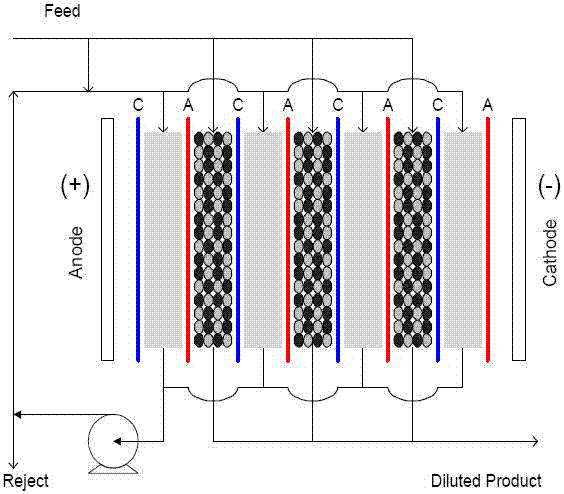

Ion exchange is a reversible mass transfer phenomenon where the composition of an aqueous solution is changed by transferring electrolytic solutes between water and a solid material. It can be used to treat hard water, or soften, by exchanging ions such as Calcium for Sodium, or by replacing ions with H+ and OH-. Water is considered hard if it contains a level greater than 300 ppm of CaCO3. The latter process, known as deionization, is used by the semiconductor industry to recycle the wash water from silicon wafer manufacturing processes (DeGenova, 2001). Ion exchange is also an important technique for many other industrial applications as summarized below. |
|
|
|
Application
|
Description |
|
biological recovery |
antibiotics, vitamins, enzymes, amino acids,
blood, viruses |
|
catalysis |
esterification, acylation, condensation |
|
hydrometallurgy |
recovery of rare earth metals |
|
medicine |
antacids, pH control, toxin removal |
|
reagent purification |
hydrochloric acid, formaldehyde, phenol,
acrylates |
|
solvent purification |
alcohols, benzene, chlorinated hydrocarbons,
acetone |
|
sugar processing |
purification of glycerin, beet, cane, and
maize sugar. |
water
treatment
|
softening, de-alkalization, de-ionization,
oxygen removal |
adapted from Kunin, 1958
|
Ion exchange is usually achieved by passing the untreated water through a column or bed packed with solid or gelatinous materials. While the list of possible ion exchange materials is vast, the most commonly used are synthetic polymer resins and, to a lesser extent, aluminum silicates and sulfonated coal. All ion exchange materials have an intrinsic capacity and must be regenerated after treating a certain amount of water. Breakthrough occurs when the exchange material is completely saturated and unwanted ions begin appearing in the effluent stream. In conventional ion exchange systems, aqueous regeneration chemicals – usually a highly acidic, basic, or saline solution – are passed through the column to release previously absorbed ions (Helfferich, 1962). Alternatively, ion exchange materials can also be generated using continuous electrolytic de-ionization (CEDI) technology. This relatively recent innovation uses an applied voltage to force ions absorbed by a synthetic resin through a semi-permeable membrane where a secondary fluid collects them for disposal (Gifford et al, 2000). While these types of systems are often expensive, their unique design allows for continuous operation and eliminates the need for a separate regeneration cycle. CEDI systems also reduce overall water consumption by producing a more concentrated waste stream. |

Gifford et al, 2000